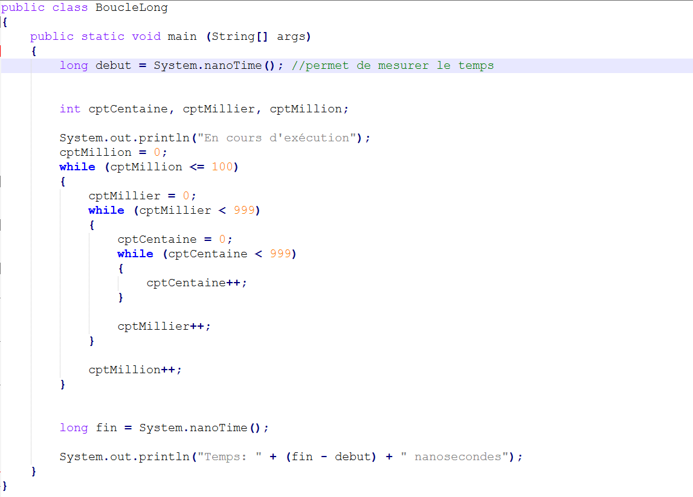
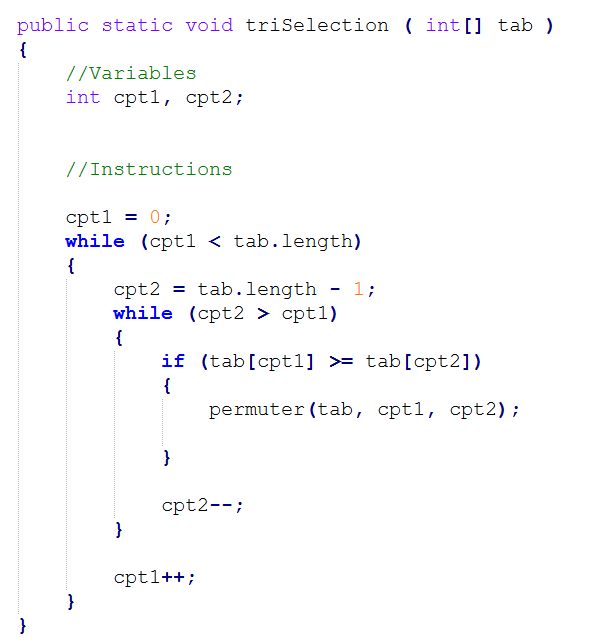
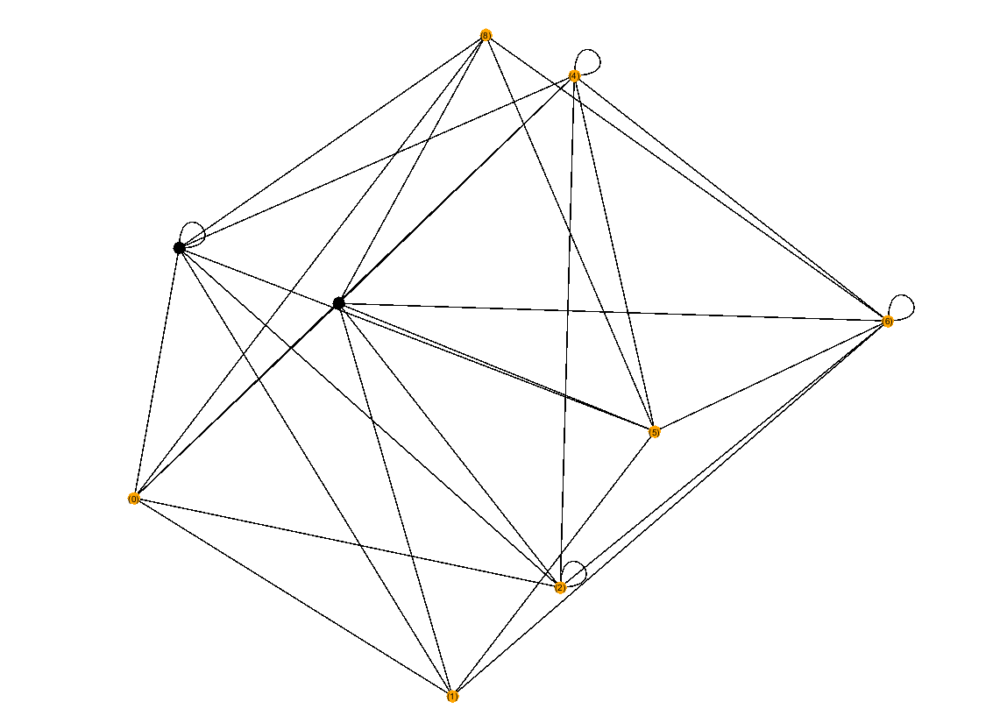

Optimiser des applications informatiques
Cette compétence consiste à proposer des applications informatiques optimisées en fonction de critères spécifiques :
temps d'exécution, précision, consommation de ressources. Elle repose sur les apprentissages critiques suivants :
Analyser un problème avec méthode en formalisant et modélisant des situations complexes :
Lors de la SAE 1.02, qui a consisté à comparer différentes approches algorithmiques selon des critères de performance
comme le temps d'execution et de traitement, j'ai comparé les performances des types
d'entiers en Java (int, long et short) à l'aide d'une boucle qui réalise un grand nombre d'itérations pour chacun des 3 types.
A la fin du traitement, le terminal affiche la durée prise par le programme en nanoseconde, ce qui m’a permis d’analyser
les écarts de performance.

Comparer des algorithmes pour des problèmes classiques, en recensant les algorithmes et les structures de données usuels
Lors de la SAE 1.02, la consigne de la partie 2 était de rédiger et exécuter une démarche visant à comparer des types de tris en Java
(tri à bulle, par sélection ou par insertion), selon des critères de performance, de temps d'exécution mais aussi de complexité.
Ce qui a permis de réaliser une comparaison structurée de solutions algorithmiques.

Formaliser et à mettre en œuvre des outils mathématiques pour l’informatique
Dans cet exemple, j'ai réalisé le parcours en largeur d'un graphe avec la librairie GraphStream en Java.
Ce qui m’a permis de mettre en œuvre un outil mathématique pour l’informatique.

S’appuyer sur des schémas de raisonnement
Dans un projet avec GraphStream en Java, j’ai programmé un parcours en largeur d’un graphe. J’ai utilisé une file pour stocker
les sommets à visiter. A chaque étape, j'ai traité les sommets dans l'ordre de parcours, ce qui m'a permis de m'appuyer sur un
schéma de raisonnement logique et structuré.
Justifier ses choix et à valider les résultats
Dans un projet Java qui consistait à réaliser un calendrier grégorien, j’ai testé deux structures de représentation de date, dans lesquelles
nous pouvons stocker la date avec 3 entiers correspondants aux numéro du jour du mois, du numéro du mois et de l’année.
Où bien passer d’un nombre de jours à une date. J’ai justifié mes choix en fonction de la simplicité et la performance,
puis j'ai validé les résultats grâce à des tests et à la mesure des temps d’exécution.